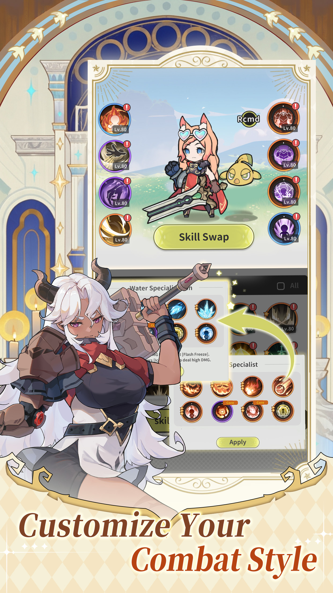
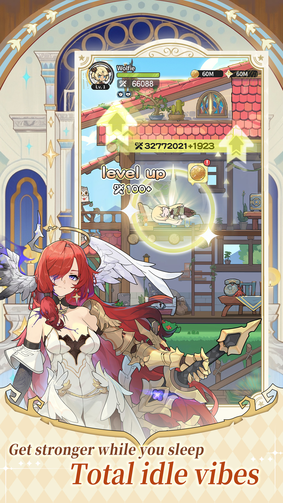
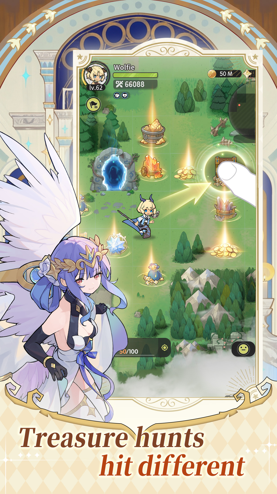
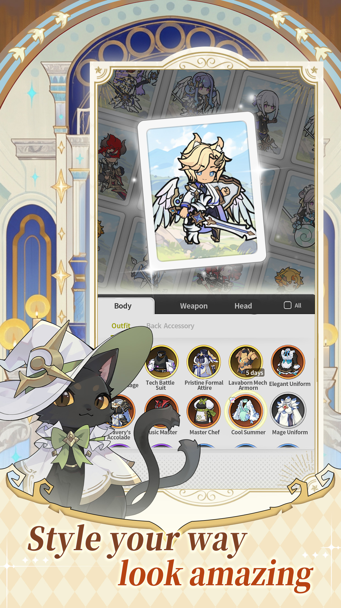

Sword X Staff

Sword x Staff là một tựa RPG độc nhất vô nhị — một “RPG Con Đường Thứ Ba” (Third Way RPG). Chiến thuật, khám phá thế giới rộng lớn, chơi nhàn rỗi (idle) — sao phải chọn một khi bạn có thể có tất cả? Chơi hardcore cũng được, hay chỉ chill cũng được — dù thế nào bạn cũng sẽ tìm thấy niềm vui của riêng mình. Cái cảm giác thực sự khác biệt. Không áp lực, không có một cách chơi duy nhất — cứ nhảy vào, khám phá, và để cuộc phiêu lưu cuốn theo cách của bạn.
Tò mò không biết lối chơi thực sự ra sao?
Chào mừng bạn đến với thế giới độc đáo của Kanstein, và trải nghiệm cuộc phiêu lưu Con Đường Thứ Ba có một không hai. Tại đây, bạn là Nhà Thám Hiểm Được Chọn, được đưa tới thế giới isekai này! Hãy hợp sức cùng Cặp Song Sinh Kiếm và Trượng (Staff and Sword Twins) và lao vào hành trình cứu lấy thế giới. Xuyên qua màn sương dày đặc, đào lên những kho báu đã bị lãng quên, và khám phá một thế giới tương tác rộng lớn theo nhịp độ của riêng bạn. Kết hợp hơn 200 kỹ năng để tạo ra phong cách chiến đấu độc nhất của riêng bạn. Tuyệt vời nhất là bạn sẽ gặp những đồng minh tuyệt vời cùng chiến đấu bên cạnh mình chống lại các Hieromon huyền thoại! Và tất nhiên — hãy nhớ rằng, tất cả những điều này đều có thể tận hưởng hoàn toàn không áp lực, vì lối chơi nhàn rỗi giúp việc thu thập tài nguyên trở nên nhẹ nhàng!
Game nhàn rỗi (idle), nhưng với một thế giới tương tác rộng lớn
Hầu hết game nhàn rỗi chỉ bắt bạn chờ đợi. Sword x Staff thì cho bạn thực sự đi đến một nơi nào đó.
Hãy bước vào một bản đồ thế giới rộng lớn, nơi mỗi vùng đất đều có nét riêng và bí mật để khám phá. Lang thang qua vùng hoang dã tươi tốt của Verdantglade, đối mặt với cuộc va chạm giữa thép và bản năng tại Cinder Ridge, trôi dạt qua vùng nước phủ sương mù của Aqualis, và khám phá tàn tích đồng cổ xưa ẩn giấu trong Loong Haven.
Mỗi vùng đất mang đến những cảnh đẹp mới, bạn đồng hành mới, kho báu mới, và những khoảnh khắc “nhìn thêm một chút nữa thôi”. Và ngay cả khi bạn ngoại tuyến, cuộc phiêu lưu của bạn cũng không dừng lại. Tài nguyên vẫn tiếp tục tích lũy trong lúc bạn nghỉ ngơi, và Thương Nhân Du Hành (Traveling Merchant) sẽ xuất hiện với những món hàng hiếm trong lúc bạn vắng mặt. Đăng nhập lại, nhận thưởng, và tiếp tục lên đường.
Chiến thuật sâu, nhưng dễ làm quen]

Chiến thuật thú vị là nhờ sự tự do, chứ không phải vì cần một bảng tính.
Mọi thứ bắt đầu với hệ thống song lớp kinh điển Chiến Binh (Warrior) & Pháp Sư (Mage), phân nhánh thành hơn 200 tổ hợp kỹ năng và lối chơi. Kết hợp các kỹ năng, thay đổi thứ tự tung chiêu, đổi lối build nguyên tố, và tinh chỉnh cách chơi theo ý thích của bạn.
Không có meta cố định. Không có một đáp án “đúng” duy nhất. Chỉ có sự đa dạng thực sự, tính linh hoạt thực sự, và rất nhiều không gian để thử nghiệm.
Chơi cho vui cũng được, hoặc đào sâu nghiên cứu lý thuyết (theorycraft) cũng được. Đi sâu đến đâu hoàn toàn tùy thuộc vào bạn.
Tiến bộ mà không cần cày cuốc]

Mạnh lên mà không cần farm vô tận. Ngay cả khi bạn ngoại tuyến, tài nguyên vẫn tích lũy, nhân vật vẫn mạnh lên, và tiến trình vẫn tiếp tục.
Cứ nằm dài, nghỉ ngơi, rồi tỉnh dậy mạnh mẽ hơn! Ngắm mây trôi qua Quần Đảo Bay (Floating Islands), ngắm sao từ căn nhà gỗ ấm cúng của bạn, săn tìm kho báu ẩn giấu, hoặc lên cấp trong lúc chẳng làm gì anh hùng cả.
Tiến bộ dễ dàng, ít căng thẳng, phần thưởng đều đặn — đó chính là thứ chúng tôi gọi là tiến trình thư giãn mà hiệu quả.
Tự động chiến đấu dễ dàng, nhưng không bao giờ nhàm chán]

Chán những game nhàn rỗi mà anh hùng chỉ đứng yên một chỗ? Tại đây, các nhân vật do AI điều khiển sẽ thích ứng với chiến trường — di chuyển vị trí, đoán trước kẻ địch, truy đuổi mục tiêu, và tung ra kỹ năng tối thượng. Tự động chiến đấu không hề nhàm chán — chúng mang tính chiến thuật, bắt mắt, và đầy những combo hoành tráng.
Avatar độc đáo, không ai giống ai]

Avatar của bạn là của riêng bạn, không cần bàn cãi. Hãy táo bạo với những kiểu tóc hoang dại, những đặc điểm khác lạ, vẻ ngoài nổi bật, hay những lựa chọn hơi hỗn loạn theo cách tuyệt vời nhất. Tạo ra thứ gì đó ngầu, kỳ lạ, phong cách, hài hước — hoặc cả bốn cùng lúc! Không có chuyện “cùng một khuôn mặt, khác bộ đồ”. Hãy làm cho nó độc đáo 100%. Bước vào thị trấn và nổi bật giữa đám đông. Ở Kanstein, việc không thể quên được cũng là một phần của niềm vui.